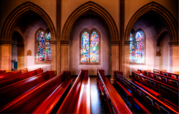

Quienes Somos
Fundador
Nombre: Jesus (יֵשׁוּעַ )
Direcion: El Reyno de los Cielos
Forma de Contacto: Clamando de Rodillas
Pastor
Nombre: Arturo Hernandez
Direccion: 18400 Lockwood Rd Manor, Texas
Email: N/A
Iglesia Evangelica Nueva Jerusalem (IENJ)
La Iglesia Evangelica Nueva Jerusalem somos una Iglesia bendecida con muchos ministerios diversos como: ministerio de mariachi, minsterio de alabanza, ministerio de panderero, y ministerio de shofar. Estamos ubicados en Manor Tx, y estamos encargados de la gran comission de llevar el evangelio a todos los que nos rodean.
Propositos
- Darle la honra a Dios por la salvacion
- Predicar el evangelio de Jesus, el Cristo de Dios
- Amar a Dios sobre todas las cosas
- Amar al projimo como nosotros mismos